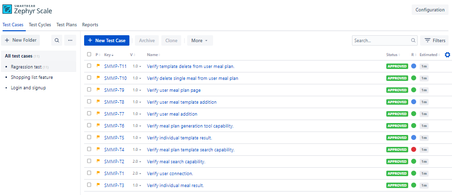
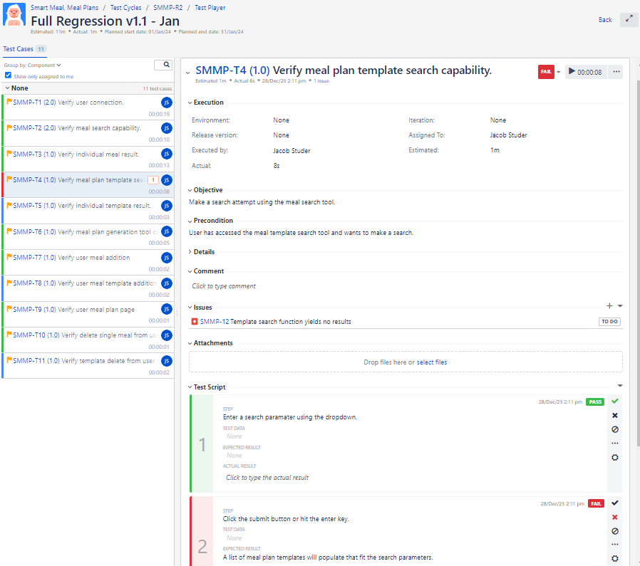
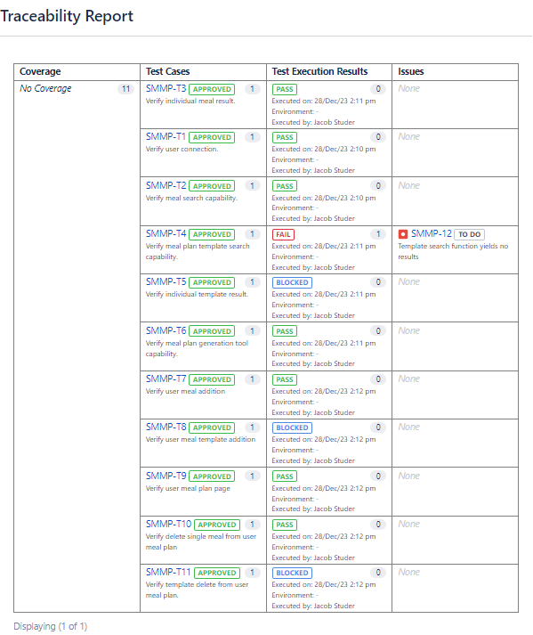

Zephyr Scale Regression Test for Smart Meal
This Zephyr scale test suite was designed as an example regression test for the Smart Meal mock app.
The Test Cases

The Test cases go through and record test progress for all the main points of functionality for the app.
The Test Cycle

The Test Cycle has the functionalities ordered in such a way that will allow automation. This particular test cycle was made to show a possible scenario where failures are present.
Traceability Report

A Traceability report was generated in order to show the results of the Test Cycle in an easy to digest manner, a new bug was created for the test failure and added to the SCRUM board.